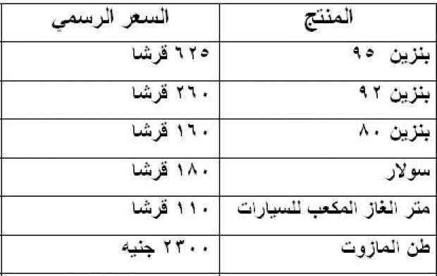
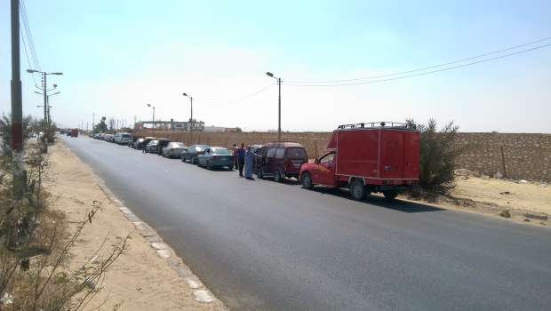

أحدث الأخبار
- المالية تعفي المطاعم غير السياحية من ضريبة القيمة المضافة بشروط
- "القضاء الإداري" يلزم الجامعة الأمريكية بتحصيل مصروفاتها بالجنيه المصري
- البورصة ترتفع بنسبة 0.52% في نهاية التعاملات
- إعادة فتح موانىء السويس بعد تحسن الأحوال الجوية
- محام: حفظ التحقيقات مع منى مينا في اتهامها بنشر أخبار كاذبة
- نجوى سالم .. كوميديانة انتهت حياتها بمأساة
- الأرصاد: طقس مائل للدفء الاثنين.. والعظمى في القاهرة 22
- مع إعداد الموازنة الجديدة.. ماذا يقدم لك كل "مليار جنيه" زيادة؟
أزمة وقود تعيد طوابير السيارات إلى 3 محافظات خارج القاهرة
محطة تموين سيارات(بنزينة) صورة لأصوات مصرية 2016 الفيوم
تطل أزمة الوقود برأسها من جديد على محافظتي الفيوم وشمال سيناء بعدما أغلقت عدة محطات تموين سيارات (بنزينة) أبوابها في وجه أصحاب السيارات وسائقيها بالفيوم وشمال سيناء بسبب عدم وجود وقود، فيما اقتصرت أزمة الوقود في محافظة الشرقية على نقص بنزين 92 بمركزي كفر صقر وأولاد صقر.
سائقو السيارات المصطفون على مداخل محطات الوقود بالمحافظتين قالوا لأصوات مصرية إن بنزين 80 و92 هما الأكثر طلبا، متوقعين انتشار الأزمة أكثر من ذلك كما حدث في السابق ومستشعرين قدوم زيادة جديدة في سعر الوقود.
واستمرار أزمة نقص الوقود واشتدادها يساعد على انتشار السوق السوداء، ويثير غضب المواطنين لرفع سائقي سيارات الأجرة تعريفة الركوب لتعويض فارق سعر البنزين بين السوق السوداء ومحطات التموين.
ويتراوح سعر لتر البنزين 80 – 92 في السوق السوداء بين 4 إلى 5 جنيهات مقارنة بالسعر الرسمي بمحطات الوقود البالغ 160 قرشا لبنزين 80 و260 قرشا لبنزين 92.

أسعار الوقود الرسمية بمحطات التموين (البنزينة)
ورفع مجلس الوزراء سعر الوقود في يوليو من عام 2014 بعد أن أصدر ثلاثة قرارات في هذا الشأن هي (1058-1059-1060).
الفيوم
يشكو مسعد رجب (40 عاما) ويعمل سائق سيارة ربع نقل من ضياع وقت طويل في الانتظار أمام محطات تموين السيارات منذ أمس الثلاثاء "لتفويل" سيارته التي ستتوقف عن العمل لو استمرت أزمة نقص الوقود، ما يؤثر على مصدر رزقه الوحيد وهو السيارة ربع النقل التي تنقل بضائع من مكان إلى آخر داخل المحافظة.

ويضيف مسعد أن نقص الوقود في هذا التوقيت ومع اقتراب عيد الأضحى يسبب أزمة كبيرة لأصحاب السيارات ربع النقل، التي تستخدم في نقل الأضاحي والبضائع، خصوصا في موسم يعتبره كثير من السائقين موسم عمل.
ويقول عمرو رمضان محامي إنه اضطر لتأجيل عمله بالمحكمة اليوم ليبدأ رحلة البحث عن البنزين لسيارته بأنحاء المحافظة.
ويضيف رمضان أنه إذا استمرت الأزمة سيترك سيارته بالمنزل ويضطر إلى ركوب المواصلات للذهاب والإياب من وإلى المحكمة حتى وإن ارتفعت تعريفة الركوب حتى لا يتعطل عمله.
عشرة من سائقي التوك توك، الذي يعد وسيلة المواصلات الرسمية للقرى التي يصعب الوصول إليها بسيارات ملاكي لعدم وجود طرق ممهدة، قالوا، أثناء اصطفافهم أمام إحدى محطات الوقود، إنهم غاضبون ويستشعرون أن الحكومة تمنع عنهم الوقود تمهيدا لزيادة أسعاره مجددا.
ويقول حسين رجب، الذي يعمل بالزراعة، "مفيش سولار في الفيوم من امبارح ولو لاقيته في محطة تقف طابور علشان نجيب لترين نشغل بيهم ماكينات الري علشان نكمل زرع".
ويضيف رجب أنه في أزمة البنزين السابقة عام 2013 كان يقوم بشراء لتر السولار من السوق السوداء بسعر 4 جنيهات وهو مجبر على ذلك حتى لا يموت الزرع من العطش.
ويؤكد رجب أنه يبحث منذ أمس عن السولار داخل المحافظة ولم يجده حتى في السوق السوداء.
إمام بركة رئيس شعبة المواد البترولية بالغرفة التجارية بالفيوم يقول إن الأزمة ترجع إلى نقص الحصص المخصصة للمحافظة من الوقود لدى وزارة البترول.
وأشار بركة إلى أنه تأكد من خلال اتصال بالمحافظة أن محافظ الفيوم أجرى اتصالات بوزارتي التموين والبترول للمطالبة بزيادة الحصص الواردة من البنزين، للسيطرة على الأزمة التي حدثت، لافتا إلى أن الأزمة قد تنتهي خلال 48 ساعة مقبلة.
الشرقية
يقول صفوت السيد مدير مدرسة ويمتلك سيارة إن بنزين 92 لم يكن متوافرا باستمرار في محطات تموين السيارات بمركزي كفر صقر وأولاد صقر خاصة في الأيام الأخيرة من كل شهر.
ويضيف السيد أنه بسؤال أصحاب المحطات كل مرة عن الأزمة يكون الرد أن هناك نقصا في الكميات الموردة إلى المحطة وبنزين 92 يكون موجودا بالمحطة كل ثلاثة أيام وينعدم وجوده مع نهاية كل شهر.
وأكد السيد أن أزمة بنزين 92 لم تكن موجدة سوى بالمراكز التى تقع على أطراف مدينة الزقازيق عاصمة الشرقية وأن محطات الوقود الموجودة بالعاصمة متوفر فيها البنزين.
شمال سيناء
إبراهيم أبو غريب سائق سيارة تاكسي يقول إن مناطق رفح والشيخ زويد من الممكن أن تحدث بها أزمة نقص وقود نتيجة عدم تمكن سيارات وزارة البترول من الوصول إلى المدينتين بسبب الأحداث الأمنية هناك، مؤكدا أن مدينة العريش عاصمة شمال سيناء، التي نادرا ما تشهد أي أزمات في نقص الوقود، أغلقت جميع محطاتها أبوابها منذ الأمس لعدم وجود وقود.

ويضيف أبو غريب أنه متواجد في منزله تاركا سيارته في محطة وقود بالقرب من المنزل من أجل حجز دور في طابور السيارات المصطفة لحين وصول الوقود للمحطة.
محمد السيد مدير محطة وقود جلبانة بحي المساعيد بمدينة العريش يقول إنه خاطب مع أصحاب محطات وقود أخرى وكلاء توزيع حصص الوقود على المحطات لتوريد الحصص فكان الرد أنه لا توجد أزمة وقريبا ستكون الحصص بالمحطات.
ويضيف السيد أن حصة الوقود التي يحصل عليها تصل إلى 50 ألف لتر من جميع الأنواع.
نقص الوقود في محافظتي الفيوم وشمال سيناء يجعل المواطنين وسائقي السيارات يستشعرون إمكانية انتشار الأزمة في أنحاء أخرى بالجمهورية ويتهمون جهات حكومية بالوقوف خلفها تمهيدا لرفع سعر المنتجات البترولية مجددا.
الاخبار المتعلقة


{kind=link}
تعليقات الفيسبوك